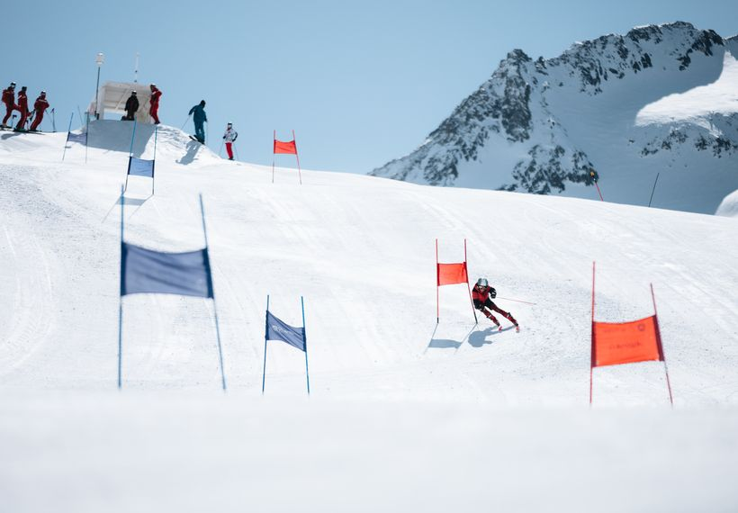

Pour bien démarrer
Pour une pratique plus adéquate et transformer les moments de ski en moment de plaisir, un équipement spécifique est recommandé.
Bon à savoir sur les équipements: Un bon équipement de ski est essentiel pour assurer la sécurité sur les pistes et minimiser les risques de blessures. Il garantit également un confort optimal, permettant de profiter pleinement de l'expérience sans gêne ni douleur. Des équipements adaptés, comme un casque et un masque de qualité, protègent contre les intempéries et les accidents. Ils jouent un rôle clé dans l'amélioration des performances en offrant un meilleur contrôle et une stabilité accrue. Enfin, un choix d'équipement approprié contribue à prolonger la durabilité du matériel et optimise l'investissement à long terme.
Bon à savoir sur la piste: Une piste de ski bien entretenue est cruciale pour garantir la sécurité et le plaisir des skieurs, quel que soit leur niveau. Elle doit être soigneusement balisée pour éviter les collisions et les mauvaises directions. Le damassage régulier assure des conditions optimales, en maintenant une surface uniforme. Une gestion adaptée des conditions météorologiques, comme le contrôle de la neige artificielle, contribue à la qualité de l'expérience. Enfin, la diversité des pistes, adaptées aux différents niveaux, est essentielle pour attirer et satisfaire un large éventail de skieurs.

Pour pratiquer le ski, voici les équipements essentiels:
Skis: Choisissez des skis adaptés à votre niveau et au type de ski (alpin, de fond, freeride, etc.).
Fixations: Elles relient vos chaussures aux skis et assurent votre sécurité.
Chaussures de ski: Confortables et bien ajustées pour un bon contrôle.
Bâtons de ski: Utiles pour l'équilibre et les virages.
Casque: Indispensable pour protéger votre tête.
Lunettes ou masque de ski: Protègent vos yeux du soleil, du vent et de la neige.
Vêtements: Une tenue imperméable et chaude, comprenant une veste, un pantalon, des gants, et des sous-vêtements thermiques.
Accessoires: Écharpe, bonnet, chaussettes de ski, et crème solaire pour protéger votre peau.